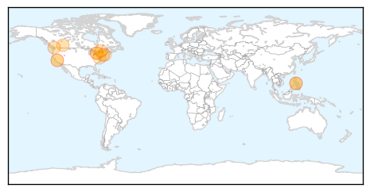

30 Day Trends
Web: 0 alerts, 0 warnings
Twitter: 0 alerts, 0 warnings
Top Articles:
- 0.987
- California Measles Outbreak ~ Officials Confirm 49 Cases in 2014 Growing Your Baby
- 0.976
- Further Cases Of Virus Spread Across Country
- 0.963
- Measles outbreak in Hamilton came from the Philippines
- 0.957
- South Korea CDC issues travel advisory for the Philippines due to measles outbreak
- 0.886
- 580 CFRA News Talk Radio :: We need to re-learn how to spot and treat the Measles: Ottawa Public Health :: News
- 0.879
- Amid renewed concern over measles, doctors call for national vaccine registry
- 0.879
- Amid renewed concern over measles, doctors call for national vaccine registry
- 0.770
- Unconfirmed measles case prompts Mandurah alert
- 0.716
- Rare measles case diagnosed in infant who traveled overseas and through PDX
- 0.692
- Health officials warn of measles patient who roamed around Peel, Halton
- 0.668
- Ontario measles outbreak has doctors calling for national strategy, more education
- 0.553
- California Measles Outbreak Surprises Officials Video
- 0.515
- Some NYC Schools Show Dismal Vaccination Rates -- NYMag
Top Tweets:
-
No tweets found for Mar 31, 2014
Web/News Articles

Tweets

Article Locations
Article Confidences